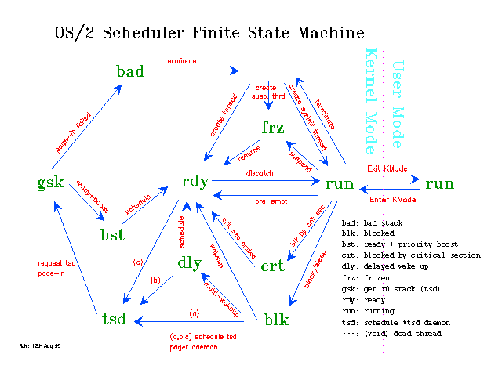

In this section we discuss the mechanisms involved when a thread involuntarily
gives up CPU processing time. That is, another thread independently causes
a thread not to receive or to give up its time-slice.
Pre-emption
Another thread of a high priority becomes
ready.
The suspended thread becomes ready and the pre-empting thread runs.
Note:
Pre-emption is not possible when running in kernel-mode (specifically when
InDos is non-zero, which is set shortly after entry to the kernel).
Within the kernel co-operative multi-tasking operates: threads must yield
explicitly (call the scheduler) to give up the processor. This applies
equally to device drivers and file system drivers, which also run in kernel
mode. Physical Device Drivers may use DevHlp_Yield and DevHlp_TCYield
to give up the processor to other threads.
Critical
Section
Another thread in the same process enters
critical section.
The critical section thread runs and none of the other threads will run
except if a signal 'fires'. If another ready thead in the same process is
selected by the dispatcher for running it is held on a temporary queue with
its status set to crt.
Note:
The Critical Section thread has run status.
DosSuspendThread
Freeze Process
Voluntary suspension is indicated by the blk state.
When a thread is suspended involuntarily it will normally be in one of the
following states:
rdy
Ready and waiting to run.
crt
Ready but prohibited from dispatch by a critical
section thread.
frz
Frozen
or Suspended by freeze-process or DosSuspendThread.
The remaining six thread states related to transient system processing on
behalf of a thread. These are:
dly
Delayed wake-up. Multiple threads have been
woken from a blocked state because they were all waiting on the same BlockId
and a multiple wake-up was specified to ProcRun. Each delayed thread is
queued pending scheduling where priority recalculation and the thread's
ring 0 stack is checked for presence in memory. If all is well then the
thread is placed on the ready queue pending dispatch. If not, then the thread
is placed on the TSD Daemon's queue for paging in the thread's TSD (ring
0 stack).
tsd
The thread
is on the TSD Daemon's queue waiting for ring 0 stack page-in. The Daemon
runs as an internal thread, which is labelled *tsd by the .P command.
This thread is responsible for calling the page manager to page in a thread's
TSD. Because a paging operation involves I/O and is therefore relatively
slow, this operation is performed under the control of a separate thread.
This allows other threads to be processed while
the paging operation takes place.
gsk
Get
Stack request in progress. The TSD Daemon is waiting for the Page Manager
to signal completion of the paging I/O operation. Effectively a thread in
this state is blocked waiting for completion of a TSD paging I/O request.
bst
Boosted Ready State.
When the TSD page-in completes successfully, the thread is placed on the
dispatchers ready queue with a priority boost. This condition is indicated
by the boosted ready state. Strictly speaking this is not an independent
state since no operation is required to take the thread from bst to
rdy.
bad
TSD page-in
request has failed. This is a serious and terminal condition, which is not
expected to occur. It is possible that an I/O error has occurred during
the TSD page-in request.
---
The
null state occurs very fleetingly during thread creation and termination.
It signifies that the thread's environment is incomplete.
The complete set of scheduler states for a finite state machine, which is
illustrated in the following diagram.
[Back: PMSEM/GRESEM]
[Next: Pre-emption and Priority Calculation]